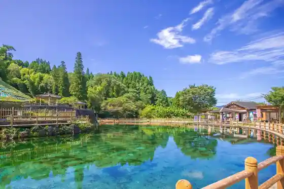
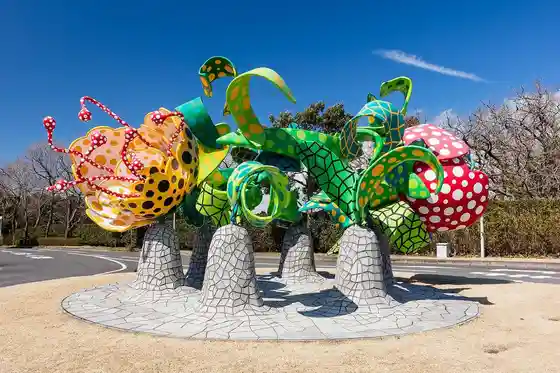
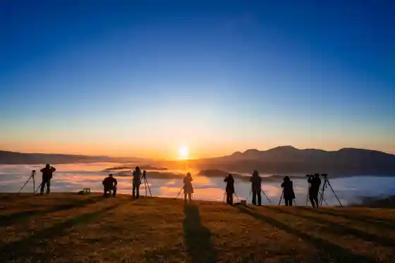
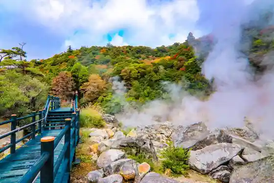

Maruike Yusui
Yusui, Kagoshima · 0995-74-3111 · Official / source link

Kiri Shima Ato Forest
Yusui, Kagoshima · 0995-74-5945 · Official / source link

Iono Furaitoeria
Yusui, Kagoshima · 0995-74-3111 · Official / source link

Hachiman Daichi Goku
Yusui, Kagoshima · Official / source link

Takenaka Ike Park (Choei Puru Somen Nagashi)
Yusui, Kagoshima · 0995-74-3111 · Official / source link
Tsurumaru Onsen
Yusui, Kagoshima · 0995-75-2858 · Official / source link
Kuri no Bussan Kan
Yusui, Kagoshima · 0995-74-2908 · Official / source link
Kiri Shima Ato Ranch
Yusui, Kagoshima · 0995-74-1333 · Official / source link
Kurino Gaku
Yusui, Kagoshima · 0995-74-3111 · Official / source link
Kurino Gaku Makuragi Kaidan (Kurino Gaku Lookout)
Yusui, Kagoshima · 0995-74-3111 · Official / source link
JR Yoshimatsu Eki
Yusui, Kagoshima · 0995-74-3111 · Official / source link
Tetsudo Museum (Kanko SL Hall)
Yusui, Kagoshima · 0995-54-2177 · Official / source link
Mori no Yakata Yu Ttari Kan
Yusui, Kagoshima · 0995-75-4142 · Official / source link
Hosutorasuto Bokujo Haikingu Experience
Yusui, Kagoshima · Official / source link
Kurino Gaku Rekurieshon Village
Yusui, Kagoshima · 0995-74-3111 · Official / source link
Maruike Yusui no Hotaru
Yusui, Kagoshima · 0995-74-3111 · Official / source link
Isao Kuchiina
Yusui, Kagoshima · 0995-75-4524 · Official / source link
Kachiguri Shrine
Yusui, Kagoshima · 0995-74-3111 · Official / source link
Matsuo Castle Ruins
Yusui, Kagoshima · 0995-74-4313 · Official / source link
Ike Taira Park
Yusui, Kagoshima · 0995-74-3111 · Official / source link
Sawa Hara Highlands
Yusui, Kagoshima · 0995-74-3111 · Official / source link
Koda Chiku no Tanada
Yusui, Kagoshima · Official / source link
Kurino Gaku Rogu Kyanpu Village
Yusui, Kagoshima · 0995-54-1020 · Official / source link
Higanzakura Jisei Nangen Chi
Yusui, Kagoshima · 0995-74-3111 · Official / source link
Tabu Genseirin Nippon'ichi no Tabu no Ki
Yusui, Kagoshima · 0995-74-3111 · Official / source link